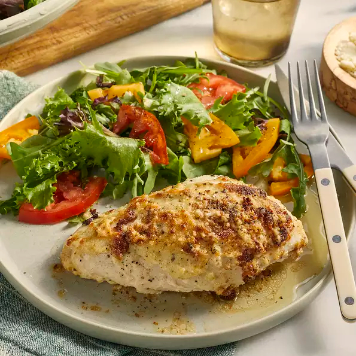

Mayo Chicken

Description
This is my favorite chicken recipe, which I learned while doing low-carb dieting. I prefer dark meat so I'll use 4 legs and thighs. You can do this recipe with pork chops as well.
Ingredients
- 1 cup mayonnaise
- 2 cloves garlic, crushed
- 1 tablespoon finely chopped fresh rosemary
- 1 teaspoon salt
- freshly ground black pepper to taste
- 1 whole chicken, cut into 6 pieces
- ½ cup grated Parmesan cheese
Steps
- Preheat oven to 350 degrees F (175 degrees C).
- Stir mayonnaise, garlic, rosemary, salt, and black pepper together in a bowl. Place chicken pieces into a 9x13-inch baking dish, spread mayonnaise mixture over chicken, and top with Parmesan cheese.
- Bake until the juices run clear, chicken is no longer pink in the middle, and an instant-read meat thermometer inserted into the thickest chicken piece reads at least 160 degrees F (70 degrees C), about 1 hour and 10 minutes.